Logistics
CAP Opérateur/opératrice logistique. Sixteen English words of the trade: tools, objects and everyday gestures. Open to everyone.
Four steps: from French to English, listen and choose, match, and complete a sentence at work. The Listen button reads the word in British English.
Word list
| Image | Français | English | Audio |
|---|---|---|---|
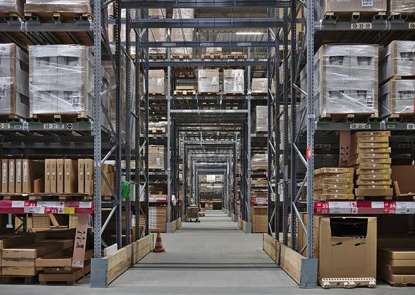 | l'entrepôt | warehouse | |
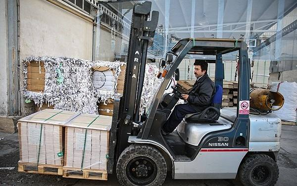 | le chariot élévateur | forklift truck | |
 | la palette | pallet | |
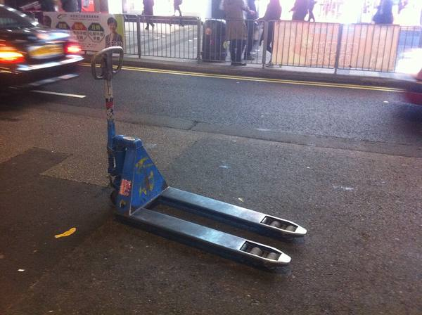 | le transpalette | pallet truck | |
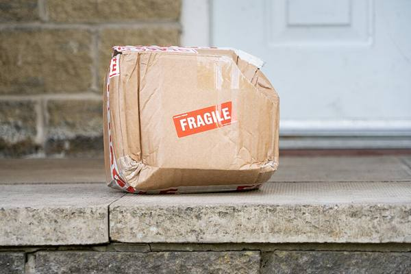 | le colis | parcel | |
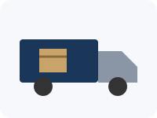 | la livraison | delivery | |
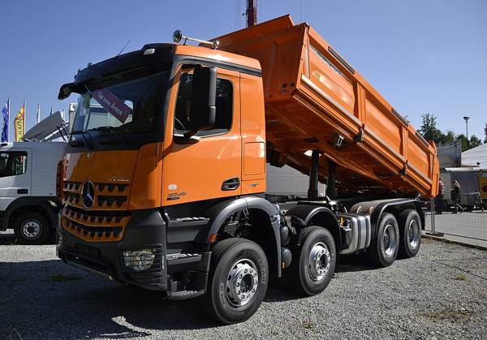 | le camion | lorry | |
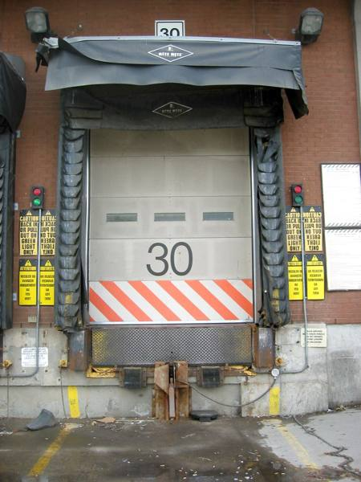 | le quai de chargement | loading bay | |
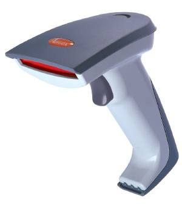 | le lecteur de codes-barres | barcode scanner | |
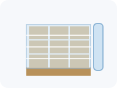 | le film étirable | stretch film | |
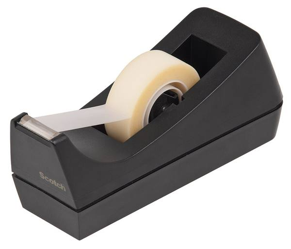 | le dévidoir de ruban adhésif | tape dispenser | |
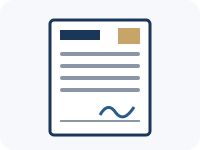 | le bon de livraison | delivery note | |
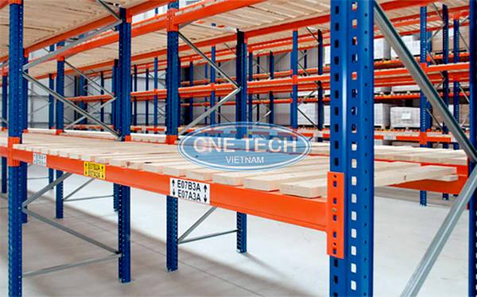 | le rayonnage | racking | |
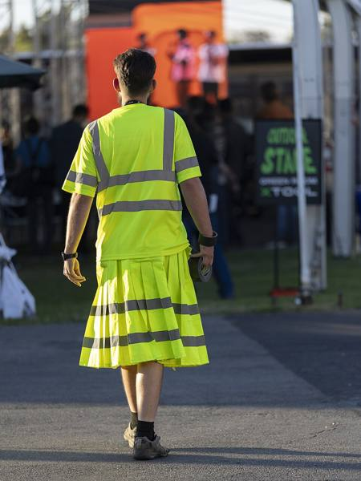 | le gilet haute visibilité | hi-vis vest | |
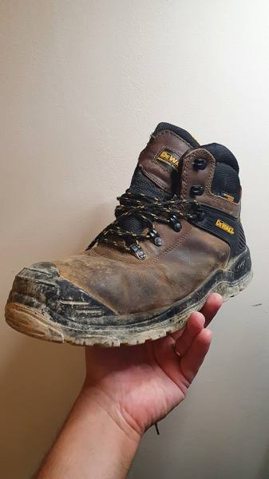 | les chaussures de sécurité | safety boots | |
| la commande | order |
Teacher key: sentences at work
- Lift the pallet with the ________. (forklift truck)
- Wrap the pallet in ________. (stretch film)
- Scan the parcel with the ________. (barcode scanner)
- The ________ is at the loading bay. (lorry)
- Sign the ________, please. (delivery note)
- Wear your ________ so drivers can see you. (hi-vis vest)
In steps 1, 2 and 3, the right answer is the line in the word list.
Image credits
Photos under an open licence, from Wikimedia Commons, resized for the phone. Original drawings for gestures and ideas.
- l'entrepôt (warehouse) : photo by Trougnouf, licence CC BY 4.0, file page on Wikimedia Commons.
- le chariot élévateur (forklift truck) : photo by Hamed Malekpour, licence CC BY 4.0, file page on Wikimedia Commons.
- la palette (pallet) : photo by Dbenbenn, licence CC BY-SA 3.0, file page on Wikimedia Commons.
- le transpalette (pallet truck) : photo by Wai Kwong Yau, licence CC BY-SA 3.0, file page on Wikimedia Commons.
- le colis (parcel) : photo by Meanwell Packaging, licence CC BY 2.0, file page on Wikimedia Commons.
- la livraison (delivery) : original drawing, Itinéraires et destinations, CC BY-NC-SA 4.0.
- le camion (lorry) : photo by High Contrast, licence CC BY 3.0 de, file page on Wikimedia Commons.
- le quai de chargement (loading bay) : photo by P199, licence Public domain, file page on Wikimedia Commons.
- le lecteur de codes-barres (barcode scanner) : photo by Téléversé par Porao (Wikimedia Commons), licence CC BY 1.0, file page on Wikimedia Commons.
- le film étirable (stretch film) : original drawing, Itinéraires et destinations, CC BY-NC-SA 4.0.
- le dévidoir de ruban adhésif (tape dispenser) : photo by Evan-amos, licence Public domain, file page on Wikimedia Commons.
- le bon de livraison (delivery note) : original drawing, Itinéraires et destinations, CC BY-NC-SA 4.0.
- le rayonnage (racking) : photo by Onetechvietnam, licence CC BY-SA 4.0, file page on Wikimedia Commons.
- le gilet haute visibilité (hi-vis vest) : photo by Tessa Bury, licence CC BY 4.0, file page on Wikimedia Commons.
- les chaussures de sécurité (safety boots) : photo by Best For My Feet, licence CC BY 3.0, file page on Wikimedia Commons.
- la commande (order) : original drawing, Itinéraires et destinations, CC BY-NC-SA 4.0.
Vocabulary sheet to print
Large type (16 point minimum), in three formats: